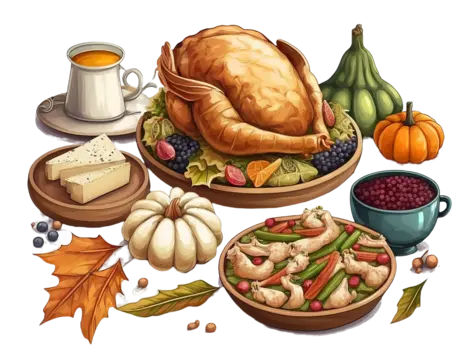

Menu
Zhaunil S'Vhaeraun
Starter
| Dish | Ingredients | Price |
|---|---|---|
| Venomous Bites | Spicy drow mushrooms, dark spices, and crushed black widow spiders | 9 G |
| Shadowflame Soup | Shadowroot, bioluminescent mushrooms, and fragrant herbs | 7 G |
| Phase Spider Grill | Phase Spider Legs and Spicy Glaze | 5 G |
Main Courses
| Dish | Ingredients | Price |
|---|---|---|
| Feywild Venison | Tender venison slow-cooked with shadowfruit and dark spices | 20 G |
| Ssinssrin Dorrin Spaghetti | Handcrafted noodles served with a rich, dark sauce of crushed nightshade berries | 20 G |
| Cave Fish Feast | Grilled cave fish, seasoned with cave herbs and served with shadowroot mash | 25 G |
| Layered Fungi Tart | Fungi from the Underdark, layered with a creamy filling and baked to perfection | 30 G |
| Bioluminescent Mushroom Risotto | Arborio rice cooked with Bioluminescent mushrooms, fragrant shadowroot, fiery Drow spice, and dark truffle oil | 50 G |
Desserts
| Dish | Ingredients | Price |
|---|---|---|
| Nightshade Tart | Nightshade berries, dark chocolate crust, and whipped goat cream | 10 G |
| Moonlight Mousse | Ethereal cream infused with the essence of shadowfruit | 15 G |
| Shadow-Silk Truffle Cupcake | Shadow-silk pastry crust filled with rich fey goat milk and creamy cave goose egg custard, topped with nightshade berries | 40 G |
Beverages
| Dish | Ingredients | Price |
|---|---|---|
| Drow Dark Roast | Dark, rich coffee brewed with shadowroot and cave herbs | 5 G |
| Spider's Kiss | Deep red wine infused with crushed black widow spiders' eggs | 10 G |
| Vhaeraun's Nectar | Fermented drow honey mixed with cave herbs | 15 G |
| Misty Brew | Sparkling concoction of bioluminescent water and feywild herbs | 15 G |
| Menzoberranzan's Embrace | Brewing concoction of Demon Web spider's venom, shadowfruit wine, screaming orange, and glowing lichen | 100 G |
